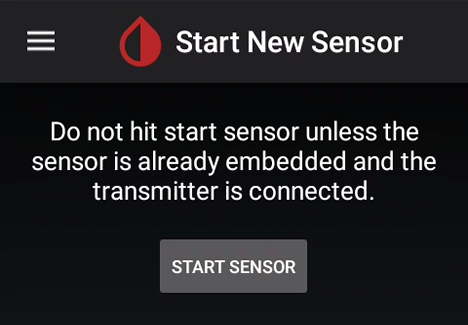
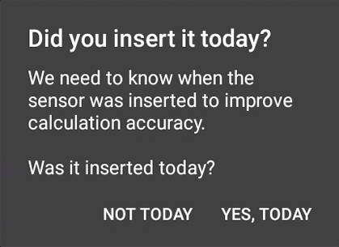
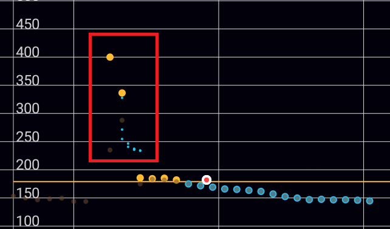

Start sensor
xDrip+ is not able to start a Libre sensor, neither is it to stop one (actually nothing can stop a sensor: if it doesn't fail it will run it's useful lifetime and stop by itself after 14 days and 12 hours).
In order to start your sensor you need to use the vendor reader or app, some third party apps like Glimp-S and eDropletNFC can start the Libre sensor.
xDrip+ sensor start is only used to track lifetime and make sure calibrations are updated. This operation is necessary and recommended each time you replace your sensor.


Confirm START SENSOR

If you inserted the sensor today (i.e. not started or recently started), answer YES, TODAY

If you answered today select the hour you physically started the sensor dragging the blue pointer to the correct time. With 12 hours display, tap am orpm. With 24 hours display drop the correct hour either on the inner or outer ring for the correct hour. Tap OK.

Drag the minutes blue pointer to the correct time and tap OK.

The newly started sensor will continue its warm-up if started from less than one hour.
Important: Even if xDrip+ will attempt reading a sensor during its warm-up phase, readings can range from unreliable to inconsistent and should not be used.

If you're using an already started sensor you will have a calibration request within 15 minutes. If you see a purple arrow you might have made a mistake in the date and time the sensor was started as BG data is available but won't display during the 1 hour warm-up.

xDrip+ will now wait for readings and update the progress. Stay on this screen. Every reading is done 5 minutes apart so it should take less than 20 minutes.

If the data source shows LimiTTer and you're not using an actual LimiTTer, your bridge device is not connected correctly.

The indication No data received yet will change to Need 3 recent readings. If no data is received, check your parameters.

When enough readings are received, the calibration request will display.
If your BG is within normal range (recommended in the lower normal range for a new sensor) and has been stable for the last 10 minutes, with no carbs not insulin active, you can calibrate.
If your BG is quickly varying or is too high, it is not recommended to calibrate now.

More information on calibration BKM here.
Two readings are required from legacy G5 receiver, you can use only one if you're sure it's valid. Just put twice the same value.
You BG should start displaying on the main graph.